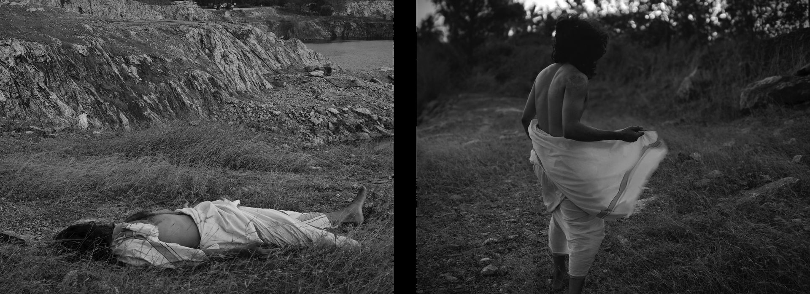
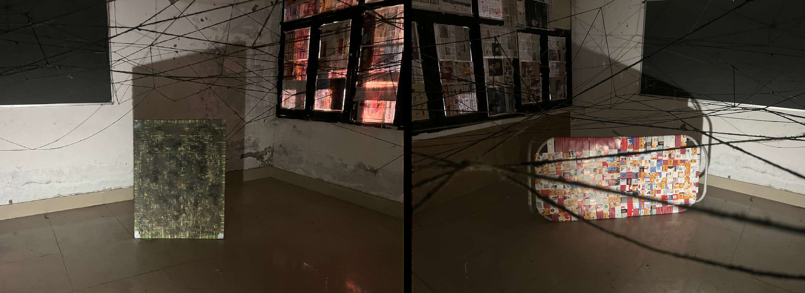
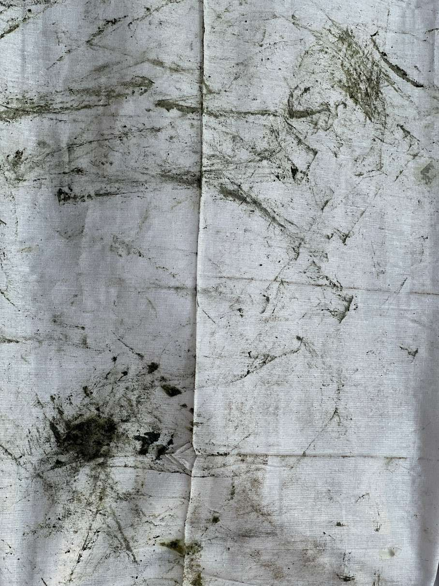

Concept Note:
A charpai discarded by those who live on the roadside was bought from them and woven again with advertisement pamphlets collected from shops across Delhi. The original jute and rope was pulled from the charpai and stretched onto a frame. It breathes the same air they breathe. It collects dust. It keeps collecting.



Concept Note:
This work materializes the architectural hostility of New Delhi. The room is stripped of passive observation and turned into a contested zone, forcing the viewer to physically negotiate barriers, borders and restrictions. Viewers navigate wearing a white gamcha, a surrogate skin that absorbs grease, dust and friction.


Concept Note:
Forensic documentation of spatial politics and architectural hostility within New Delhi. The metropolis is confronted as an extractive machine that filters and restricts organic life. The lens isolates moments of physical friction: bodies sustaining on synthetic trash heaps, roots contorting against iron grids, life pushed into the margins of the urban system.


